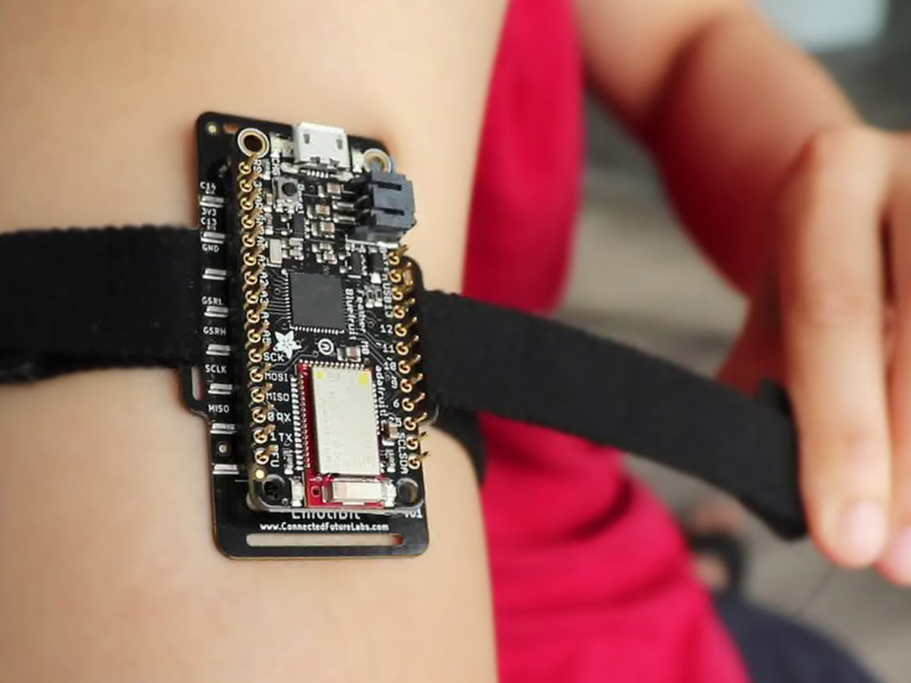

🔬Research
-

Render: Pupil Labs Proactive AI VR Museum Companion
In progress · Extended Horizon Lab
A Unity VR system on Meta Quest 3 with Pupil Labs Neon XR eye tracking. Gaze, fixation, pupil, and dwell-time data estimate visitor attention and time AI interventions, mapping real-time gaze onto 3D museum objects and adapting responses to user state and interaction history.
Lead developer


- Meta Quest 3
- Pupil Labs Neon
- Eye Tracking
-

Photo: Connected Future Labs PulseCoach: State-Aware AI for XR
UIST '26 Student Innovation ContestUnder review
Combines physiological sensing, AI, and augmented reality for adaptive coaching. EDA, HRV, PPG, and IMU signals estimate user state and trigger interventions, built around real-time biometric processing and context-aware AR delivery.
Co-author
- EmotiBit
- Biosignals
- AR
-

Playground+
Projection-based interactive XR · Extended Horizon Lab
A projection-based mixed-reality play system pairing a home projector and webcam over a shared play space. I integrated a ZED 2i stereo camera and improved real-time sensing performance, planned the full physical setup — camera placement, projector selection, mounting, and interaction space — and evaluated hardware specifications against the equipment budget.
Research developer

- ZED 2i
- Computer Vision
- Projection Mapping
© 2026 Nathan Tran · Raleigh, North Carolina